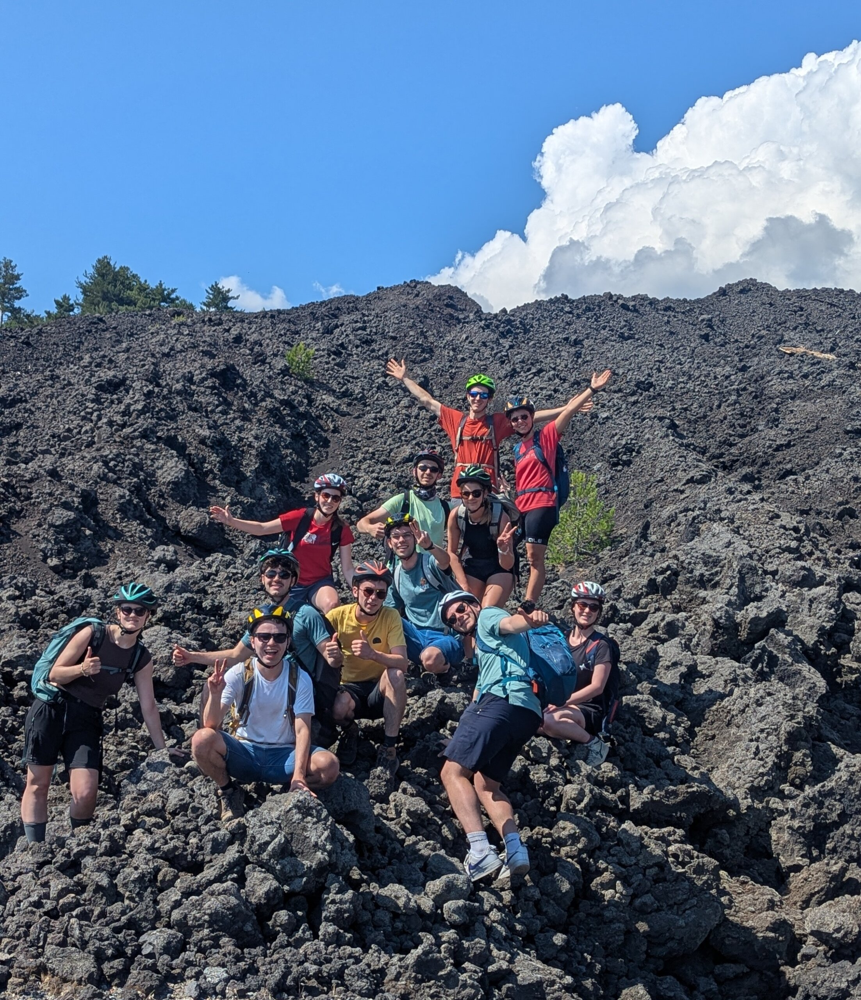
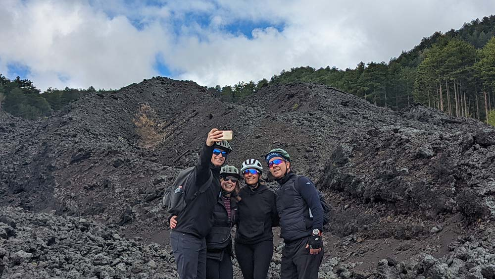

Dalle colate laviche dell'Etna ai boschi secolari dei Nebrodi, dai borghi medievali al fascino barocco. Esperienze autentiche lontane dal turismo di massa.
Sentieri esclusivi lontani dal turismo di massa: dai crateri dell'Etna ai boschi incontaminati.
Guidati da Mariella e guide locali del territorio con furgone d'appoggio al seguito.
E-MTB biammortizzate performanti con grande autonomia per pedalare senza fatica.
Degustazioni di vini Etna DOC, pranzi in home restaurant e prodotti tipici genuini a km 0.
Dalle escursioni giornaliere fino ai viaggi di più giorni: scegli l'avventura ideale per il tuo livello.
Una giornata memorabile tra colate laviche storiche, crateri e paesaggi lunari fino alle quote sommitali.
Un mix perfetto di natura, panorami tra mare e vulcano e un pranzo indimenticabile in Home Restaurant tipico.
Viaggio tra le pinete della Ragabo, la maestosa colata del 2002 e l'esplorazione speleologica di un tunnel lavico millenario.
Una fuga tra le contrade del vino vulcanico, antichi palmenti e cantine prestigiose sull'Etna Nord.
Tra le colate laviche, le piantagioni dell'oro verde (il pistacchio di Bronte DOP) e il fascino storico dell'antico maniero.
Una salita verso il comune più alto della Sicilia (1.275m) tra pascoli incontaminati, boschi di faggio e tradizioni casearie millenarie.
Una magnifica traversata lungo la dorsale dei Nebrodi, toccando i laghi d'alta quota Maulazzo e Biviere.

Un weekend tra storia, natura e mistero: pedalando tra i borghi più belli d'Italia, la Stonehenge siciliana e le gole fluviali.

La circumnavigazione dell'Etna in 3 tappe indimenticabili: sapori di cantina, boschi vulcanici e le colate più scenografiche.

Una grande traversata tra la Sicilia più verde e selvaggia e le imponenti quote vulcaniche dell'Etna.

Una vacanza da sogno a pedali navigando tra Lipari, Vulcano, Salina e Stromboli con e-bike e barca privata.
Un viaggio da favola tra le meraviglie UNESCO di Noto, Modica, Scicli, Ragusa Ibla e la riserva marina di Vendicari.
Verifica le date disponibili, seleziona il tuo tour preferito o blocca la tua escursione in pochi clic.
Nessuna partenza di gruppo fissa in questa data.
Puoi comunque richiedere un Tour Privato o un'escursione su misura per te e i tuoi amici!
Richiedi Tour in questa DataComponi la tua vacanza ideale in Sicilia scegliendo tappe, durata, livello e servizi extra.
Seleziona una o più zone che vorresti esplorare nel tuo viaggio su misura.
Crateri, colate laviche, grotte e pinete d'alta quota.
La Sicilia verde: laghi montani, faggete e borghi come Floresta.
Rocce sacre misteriose, Montalbano Elicona e canyon basaltici.
Lipari, Salina, Vulcano: combinazione indimenticabile e-bike & mare.

Noto, Modica, Scicli, riserva di Vendicari e mare cristallino.

Randazzo, Bronte, Castiglione di Sicilia e antiche cantine DOC.
Ospiti provenienti da tutto il mondo che hanno pedalato con noi tra vulcano e mare.
"Esperienza indimenticabile! Mariella e la nostra guida sono state fantastiche. Le e-bike erano potentissime e ci hanno permesso di raggiungere paesaggi vulcanici che tolgono il fiato senza fatica. Il pranzo in home restaurant poi è stato sublime!"
"5 giorni magici tra Lipari, Salina e Vulcano. Organizzazione impeccabile, hotel perfetti e percorsi cicloturistici spettacolari. Consiglio Sicily Bike Tours a chiunque voglia scoprire la vera Sicilia."
"Abbiamo partecipato con i nostri due figli di 11 e 14 anni. Giornata splendida tra faggi secolari e degustazione di provola. Guide gentili, attentissime alla sicurezza e molto preparate."
Hai dubbi sulle nostre escursioni o sui tour in e-bike? Ecco le risposte più comuni.